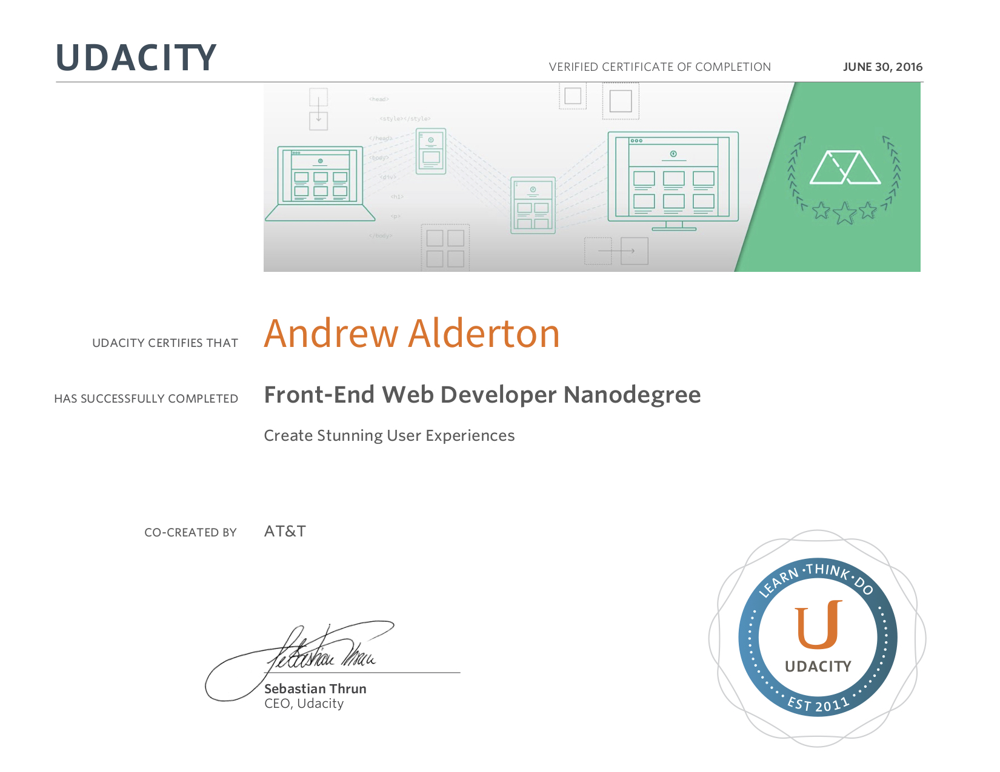
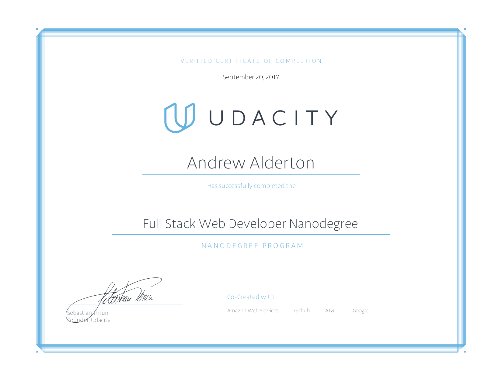

Neighbourhood Mapandrewalderton.github.io/frontend-nanodegree-neighbourhood-mapItem Cataloggithub.com/andrewalderton/fullstack-nanodegree-item-catalogWebsite Optimisationandrewalderton.github.io/frontend-nanodegree-mobile-portfolioArcade Gameandrewalderton.github.io/frontend-nanodegree-arcade-gameFeed Reader Testingandrewalderton.github.io/frontend-nanodegree-feedreaderMulti User Blogmulti-user-blog-165915.appspot.comLinux Server Configurationgithub.com/Andrewalderton/fullstack-nanodegree-linux-server-configurationLogs Analysisgithub.com/Andrewalderton/fullstack-nanodegree-logs-analysisOnline Resumeandrewalderton.github.io/frontend-nanodegree-resumeOnline CoursesI have completed 2 Udacity Nanodegree training programs.View my Udacity public profile here: 